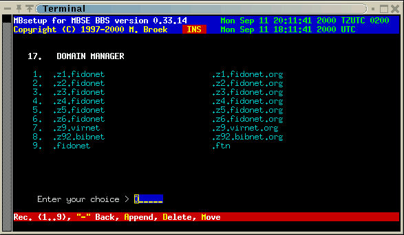

Last update 25-Oct-2001
MBSE BBS Setup - Edit Domains.
Introduction.
The domains table is used to translate Fidonet domains to internet domains and back for the Fidonet <-> Internet gateway. When you add entries to this table make sure that the entry .fidonet and .ftn is always the last entry. This is the default entry. New added domains can be moved in place with the Move command.
Edit Domains.
Fidonet The Fidonet domain to match. Internet The internet domain to match. Active If this domain is active. Deleted If this domain must be deleted.
Next is an example table.

 Back to index
Back to index